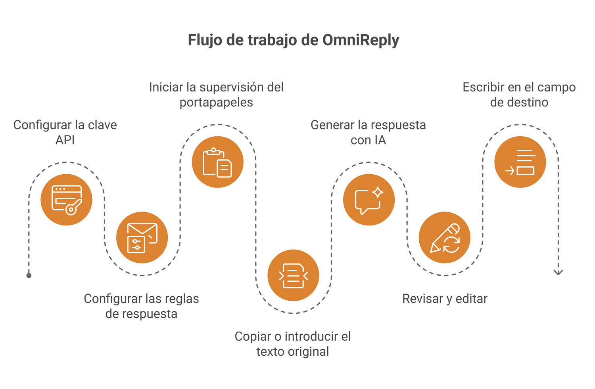
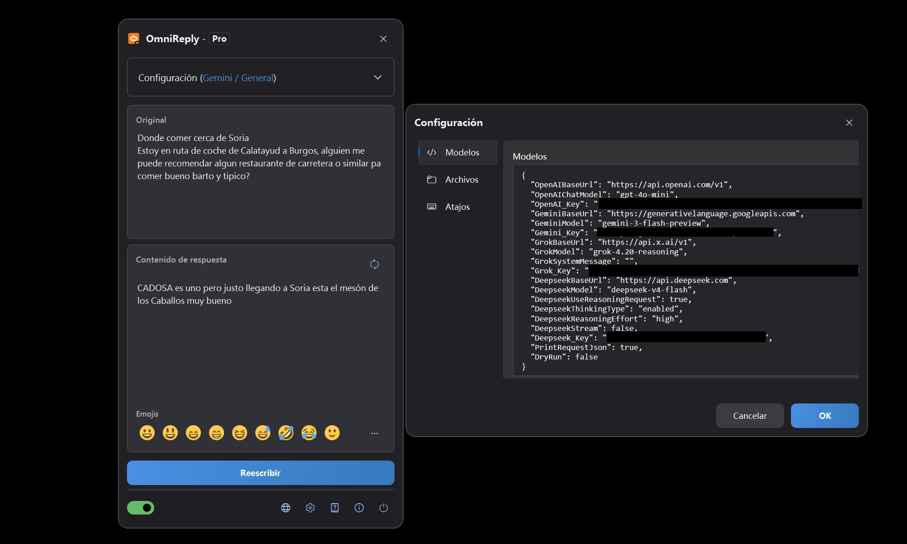
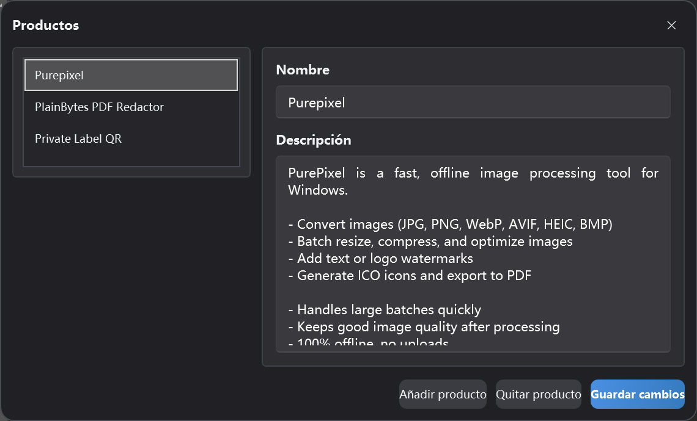

Asistente de respuestas con IA basado en el portapapeles
Guía de usuario de OmniReply
Esta guía explica la interfaz de OmniReply, el flujo de configuración, la generación de respuestas con IA y el comportamiento de la reescritura. Empieza por la sección de inicio rápido y vuelve a los detalles de las funciones cuando necesites más contexto.
1. Conoce OmniReply
OmniReply está pensado para reducir la distancia entre leer un mensaje y redactar una respuesta cuidada. Te ayuda a capturar el texto de origen, generar un borrador, revisarlo y escribirlo en la aplicación de destino.
1.1 Qué es OmniReply
OmniReply es un asistente de respuestas con IA para Windows. Supervisa el texto copiado, lo combina con el modelo, la escena, el idioma, el estilo, el objetivo y la longitud de respuesta que hayas seleccionado, y genera una respuesta editable. Tras revisar el borrador, puedes reescribirlo en el campo de entrada de otra aplicación.
1.2 Casos de uso habituales
Respuestas en redes sociales
Prepara respuestas naturales para comentarios, mensajes, publicaciones y conversaciones en comunidades.
Atención al cliente
Convierte las preguntas de los usuarios en explicaciones claras, mensajes de tranquilidad, pasos siguientes o respuestas de soporte.
Recomendaciones de productos
Usa la información del producto para crear recomendaciones concisas, explicaciones de funciones y respuestas comparativas.
1.3 Flujo de trabajo básico

2. Resumen de interfaz y funciones
La mayor parte del trabajo diario se realiza en la ventana principal flotante. Las ventanas de Configuración y Administrador de productos se usan principalmente al configurar OmniReply.
2.1 Ventana principal
| Área | Función | Consejo |
|---|---|---|
| Barra de título | Muestra el nombre de la aplicación y la edición actual. La ventana puede contraerse en la bola flotante. | Contrae la ventana cuando quieras dejarla fuera del camino mientras esperas texto copiado. |
| Área de Configuración | Selecciona el modelo, la escena, el idioma, el estilo, el objetivo, la longitud y el producto. | Tras cambiar las reglas, regenera la respuesta para aplicar la nueva configuración. |
| Área de texto de origen | Muestra el texto capturado del portapapeles y también acepta entrada manual. | Úsala cuando copiar resulte incómodo o cuando quieras editar primero el texto de origen. |
| Área de respuesta | Muestra la respuesta generada por IA y permite editarla. | Revisa siempre los hechos, el tono y el contenido sensible antes de reescribir. |
| Barra de emoji | Inserta emoji habituales en la respuesta. | Los emoji insertados son caracteres de texto y pueden editarse o eliminarse. |
| Barra de estado | Controla la supervisión del portapapeles, el idioma, Configuración, Acerca de y Salir. | Activa la supervisión del portapapeles antes de usar el flujo de captura automática. |

2.2 Estado de la bola flotante
Cuando está contraída, OmniReply se convierte en una bola flotante. Puedes arrastrarla, hacer doble clic para expandir la ventana principal y deducir el estado del servicio por su aspecto. Una bola flotante a color indica que la supervisión del portapapeles está activa. Una bola gris indica que la supervisión está desactivada. Mientras esperas una respuesta de IA, la bola también puede mostrar un estado de solicitud en curso.
2.3 Ventana de Configuración
Configuración de modelos
Gestiona claves API, URL base y nombres de modelo para OpenAI, Gemini, Grok y DeepSeek.
Configuración de red
Activa un proxy HTTP manual cuando sea necesario. Si está desactivado, OmniReply usa la configuración de proxy del sistema.
Configuración de atajos
Cambia los atajos globales para mostrar la ventana, activar o desactivar la supervisión, actualizar y reescribir.
Configuración de archivos
Elige la carpeta de historial. Si no se selecciona ninguna carpeta, el historial no se guarda.
2.4 Administrador de productos
El administrador de productos almacena nombres y descripciones de productos para el perfil actual. Cuando el objetivo de la respuesta es una recomendación de producto, la descripción del producto seleccionado se envía como contexto para que la respuesta generada pueda mencionar el producto con mayor precisión.

3. Inicio rápido
Sigue estos pasos la primera vez que uses OmniReply. Después, el flujo diario suele limitarse a copiar, revisar y reescribir.
Añadir una clave API
Abre Configuración e introduce la clave API del servicio de IA que quieras usar. Los proveedores que no utilices pueden quedar vacíos. El modelo seleccionado actualmente debe tener una clave válida.
Configurar reglas de respuesta
Elige el modelo, la escena, el idioma, el estilo, el objetivo y la longitud de la respuesta. Si preparas una recomendación de producto, selecciona también el producto correspondiente.
Iniciar supervisión del portapapeles
Activa el interruptor de supervisión del portapapeles en la barra de estado o pulsa Ctrl + Shift + X.
Copiar o introducir texto de origen
Copia una pregunta, un comentario o un mensaje de otra aplicación. También puedes escribir o pegar el texto directamente en OmniReply y regenerar manualmente.
Generar una respuesta con IA
Tras copiar texto nuevo, OmniReply lo lee y llama al modelo seleccionado. Para generar de nuevo, haz clic en Actualizar o pulsa Ctrl + Shift + R.
Revisar y editar
El cuadro de respuesta es editable. Ajusta la redacción, elimina partes innecesarias, añade contexto o inserta emoji. No te saltes la revisión solo porque el borrador lo haya generado la IA.
Reescribir en el campo de destino
Haz clic primero en el campo de entrada de destino para colocar el cursor en el lugar correcto. Luego haz clic en Reescribir o pulsa Ctrl + Shift + Enter.
4. Detalles de las funciones
Esta sección explica qué hace cada ajuste y cómo afecta a la respuesta final.
4.1 Modelos de IA y claves API
| Opción de modelo | Ajuste requerido | Descripción |
|---|---|---|
| ChatGPT (OpenAI) | OpenAI_Key |
Usa un punto de conexión Chat Completions compatible con OpenAI. Puedes configurar la URL base y el nombre del modelo. |
| Gemini (Google) | Gemini_Key |
Usa Google Gemini. Puedes configurar la URL base de Gemini y el nombre del modelo. |
| Grok (xAI) | Grok_Key |
Usa xAI Grok. Puedes configurar la URL base, el nombre del modelo y el mensaje del sistema. |
| DeepSeek (DeepSeek) | Deepseek_Key |
Admite solicitudes compatibles con OpenAI o ajustes de solicitud de estilo reasoning de DeepSeek. |
El modelo seleccionado determina qué clave se requiere. Los proveedores que no uses pueden quedar vacíos.
4.2 Reglas de respuesta
| Regla | Efecto | Recomendación |
|---|---|---|
| Escena | Define la plataforma o el contexto de la respuesta, como redes sociales, foros o soporte. | Elige la escena que mejor coincida con la conversación real. |
| Idioma | Controla el idioma de salida. El idioma automático intenta seguir el contexto del texto de origen. | Elige un idioma específico cuando la respuesta deba mantenerse fija en un solo idioma. |
| Estilo | Controla el tono, la personalidad y la redacción. | En comentarios públicos, un estilo natural, amable y no insistente suele ser más seguro. |
| Objetivo de respuesta | Guía la intención de la respuesta, como recomendación, soporte, explicación o réplica. | Confirma el objetivo antes de generar, porque influye mucho en el borrador. |
| Longitud de respuesta | Controla si la salida debe ser breve, media o detallada. | En plataformas sociales, una longitud breve o automática suele ser un buen punto de partida. |
4.3 Datos de recomendación de productos
Los datos de recomendación de productos incluyen el nombre y la descripción del producto. Cuando se selecciona un objetivo relacionado con recomendaciones, OmniReply envía la descripción del producto seleccionado como contexto para la IA. Una buena descripción del producto debería incluir:
- Qué problema resuelve el producto.
- Funciones principales y ventajas.
- A quién va dirigido y cuándo resulta útil.
- Si funciona sin conexión, sube datos o tiene limitaciones importantes.
- Redacción clara y realista, evitando afirmaciones exageradas.
4.4 Supervisión del portapapeles
Con la supervisión activada, OmniReply escucha las actualizaciones del portapapeles del sistema y lee el nuevo contenido de texto. Para reducir activaciones accidentales, ignora texto vacío, texto repetido y operaciones de copia realizadas mientras la ventana de OmniReply está activa.
4.5 Edición y emoji
El área de respuesta es un cuadro de texto editable. Puedes reescribir directamente el texto generado por IA o insertar emoji Unicode habituales desde la barra de emoji o la ventana emergente. Algunos sistemas o controles WPF pueden no mostrar emoji a todo color, pero los caracteres insertados siguen siendo emoji estándar.
4.6 Reescritura y atajos
La reescritura oculta primero la ventana de OmniReply, espera brevemente a que el campo de destino recupere el foco y luego simula la entrada por teclado carácter a carácter. Los saltos de línea se gestionan con una tecla Intro simulada. Los atajos predeterminados son:
| Acción | Atajo predeterminado |
|---|---|
| Mostrar u ocultar la ventana principal | Ctrl + Shift + D |
| Iniciar o detener la supervisión del portapapeles | Ctrl + Shift + X |
| Regenerar la respuesta | Ctrl + Shift + R |
| Reescribir la respuesta | Ctrl + Shift + Enter |
4.7 Historial
Tras seleccionar una carpeta de historial en la configuración de archivos, OmniReply puede guardar el texto de origen, las respuestas generadas y las horas de las solicitudes. Si la carpeta de historial está vacía, no se escribe ningún historial.
5. Datos, privacidad y licencia
OmniReply conserva la configuración y los datos del perfil en tu dispositivo. Las solicitudes de IA se envían directamente al servicio de IA que elijas.
5.1 Datos almacenados localmente
| Dato | Descripción | Gestión para el usuario |
|---|---|---|
| Configuración de la aplicación | Puntos de conexión de modelos, claves API, ajustes de proxy, atajos, configuración del historial y opciones relacionadas. | Consulta y edita en la ventana de Configuración. |
| Perfiles y datos de productos | Perfil actual, lista de productos, escena seleccionada y reglas de respuesta. | Gestiona en la ventana principal y en el Administrador de productos. |
5.2 Qué incluyen las solicitudes de IA
Al generar una respuesta, OmniReply envía al servicio de IA seleccionado el texto de origen, las reglas de respuesta actuales, el contexto de producto necesario y los parámetros de la solicitud al modelo. Las solicitudes usan tu propia clave API. OmniReply no enruta tus solicitudes a través de un servidor intermediario.
5.3 Seguridad de las claves API
- No compartas archivos de configuración que contengan claves API.
- En equipos compartidos, gestiona adecuadamente la configuración y el historial antes de alejarte.
- Antes de copiar contenido sensible, revisa las políticas de privacidad y tratamiento de datos del servicio de IA seleccionado.
- Si no hay carpeta de historial configurada, OmniReply no guarda el texto de origen ni el historial de respuestas generadas.
5.4 Ediciones Free y Pro
| Edición | Descripción |
|---|---|
| Free | Permite 10 generaciones con modelo por día de calendario local y puede restringir algunas selecciones de reglas. |
| Pro | Desbloquea las funciones Pro. La compra y el estado de la licencia se muestran en la ventana de licencia de la aplicación. |
6. Preguntas frecuentes y solución de problemas
Si algo no funciona como esperabas, empieza aquí. La mayoría de los problemas están relacionados con el interruptor de supervisión, las claves API, la red o el proxy, conflictos de atajos o el foco en el campo de destino.
6.1 No ocurre nada al copiar
Comprueba lo siguiente en este orden:
- Asegúrate de que la supervisión del portapapeles esté activada en la barra de estado.
- Asegúrate de que el contenido copiado sea texto sin formato y no esté vacío.
- Comprueba si OmniReply sigue esperando a que termine la solicitud de IA anterior.
- Comprueba si el texto copiado es exactamente igual al texto capturado anteriormente.
- Comprueba si copiaste dentro de la ventana de OmniReply. Las copias desde la ventana activa de OmniReply se ignoran.
6.2 Clave API no configurada
El proveedor del modelo seleccionado no tiene una clave configurada. Abre Configuración e introduce la clave API de ese proveedor, o cambia a un modelo cuyo proveedor ya esté configurado.
6.3 Solicitud de IA fallida o agotada
Las causas habituales incluyen una clave no válida, cuota agotada, congestión del servicio, problemas de red, proxy mal configurado o tiempo de espera de la solicitud. Primero confirma que el navegador y el proxy del sistema pueden acceder al servicio de IA de destino; luego revisa la URL base, el nombre del modelo y la clave API en Configuración.
6.4 El idioma o el estilo de la respuesta no es el esperado
Revisa el idioma, la escena, el estilo, el objetivo y la longitud de la respuesta. En modelos compatibles con OpenAI, un idioma fijo se incluye en el mensaje del sistema. Si la salida sigue siendo inconsistente, selecciona un idioma de destino específico y regenera.
6.5 La respuesta se escribió en el lugar equivocado
Antes de reescribir, haz clic en el campo de entrada de destino y asegúrate de que el cursor esté en el lugar correcto. La reescritura simula la entrada por teclado; si el foco está en otra ventana o control, la respuesta se escribirá allí.
6.6 Los atajos no funcionan
Es posible que el atajo ya lo use otra aplicación. Abre la pestaña Atajos en Configuración y elige una combinación que incluya Ctrl, Shift, Alt o Win, evitando conflictos con los atajos del sistema.
6.7 Problemas de visualización de emoji
En algunos sistemas, los cuadros de texto WPF pueden no mostrar emoji a color de forma fiable. Aunque en OmniReply los emoji aparezcan monocromáticos, los insertados y reescritos suelen ser caracteres emoji Unicode estándar. Si se muestran a color en la aplicación de destino depende de esa aplicación y del soporte de fuentes del sistema.
6.8 El historial no se guardó
El historial solo se guarda cuando hay una carpeta de historial seleccionada en la configuración de archivos. Un ajuste de carpeta vacío significa que no se registra historial. Asegúrate de que la carpeta exista y de que tu cuenta de usuario pueda escribir en ella.
6.9 ¿Qué incluir en un informe de soporte?
Incluye la versión de la aplicación, la versión de Windows, el modelo seleccionado, el mensaje de error, si usas un proxy, si el problema es reproducible, los pasos para reproducirlo y capturas de pantalla si ayudan. No envíes claves API reales.